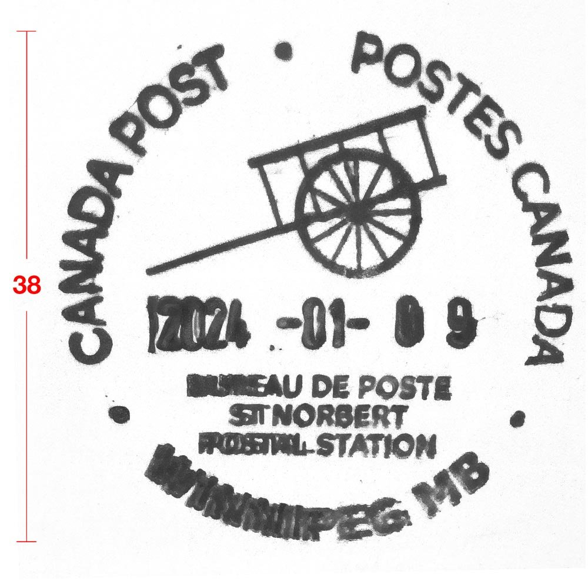

Winnipeg St Norbert PO pictorial cancel
Cart
- Status
- Active
- Run dates
- ? to present
- Design
- cart
- Ink colour
- Black
- Designer
- Unknown
- Post office
- Winnipeg St Norbert PO
3527 Pembina Hwy
Winnipeg, MB
R3V 1A0 - Subjects
- cart, post office, postal service
Collect it by mail. Send your stamped covers, with a stamped return envelope, to the post office address above. How to collect pictorial cancels by mail · en français
 Winnipeg C.R.O.Chinese
Winnipeg C.R.O.Chinese Winnipeg C.R.O.Red River Settlement
Winnipeg C.R.O.Red River Settlement